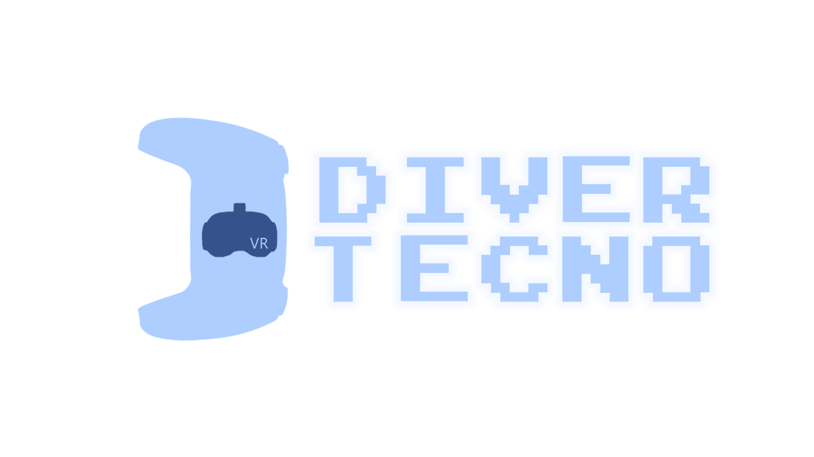

<header>
  <mat-toolbar color="primary" class="mat-elevation-z2">
    <a routerLink="/home">
      
    </a>
    <span class="example-spacer"></span>
    <a routerLink="/vr-games" routerLinkActive="activebutton" mat-button
      >Juegos VR</a
    >
    <a routerLink="" mat-button>Tecnología</a>
    <mat-icon
      *ngIf="configTheme.getTheme() === 'light'"
      (click)="configTheme.setTheme('dark')"
      >bedtime</mat-icon
    >
    <mat-icon
      *ngIf="configTheme.getTheme() === 'dark'"
      (click)="configTheme.setTheme('light')"
      >brightness_5</mat-icon
    >
  </mat-toolbar>
</header>
